충남대학교 컴퓨터공학과 김상하 교수님의 "컴퓨터 네트워크" 강의를 필기한 내용입니다.
다소 잘못된 내용과 구어적 표현 이 포함되어 있을 수 있습니다.
Routing 의 과정 예시
기본 구조와 설정
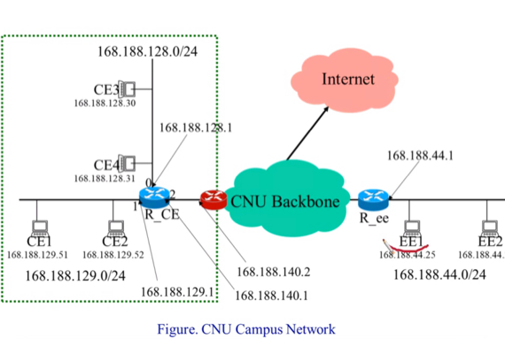
- 일단 위와 같은 구조로 되어있고
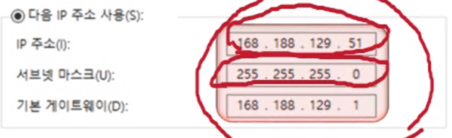
- 내 컴퓨터에는 이렇게 설정이 되어있다고 해보자
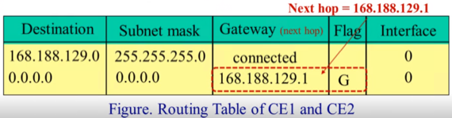
- 그럼 위와 같은 테이블이 생성이 된다 - 위의 테이블은 내 컴퓨터의 routing table이다
- 일단 내가 IP주소는 168.188.129.51을 입력했고 서브넷 마스크는 255.255.255.0을 입력했으므로 이 둘을 bitwise AND한 결과인 168.188.129.0와 서브넷 마스크가 내 컴퓨터의 첫번째 행에 들어가게 된다
- IP주소와 서브넷 마스크를 설정하면 자동으로 해당 행이 완성이 되는데, 이말은 해당 Destination과 매핑되는 모든 IP는 내 컴퓨터와 직접적으로 연결되어 있다는 것을 뜻한다
- 따라서 Gateway 열에 connected라고 표시 되는 것
- 그리고 맨 아래줄인 Default은 내 컴퓨터와 직접적으로 연결되어 있지 않으니 라우터로 보내라는 의미가 된다
- 즉, 입력한 기본 게이트웨이 값이 나랑 연결된 호스트가 아닐 경우에 패킷을 보내야 되는 IP주소가 되는 것
- 기본 게이트웨이의 경우에는 G의 값을 가지는 flag가 붙게 된다
- 따라서 나랑 연결된 놈이 아니라면 router로 보내야 하고, 위의 예제에서는 router의 IP주소가 168.188.129.1이므로 이 값을 기본 게이트웨이에 적어주게 되는 것이다.
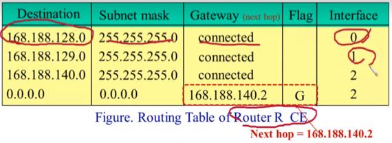
- 그리고 위의 예제에서 R_CE 라우터의 라우팅 테이블은 위와 같이 구성이 된다
- 마스킹 결과가 128.0이면 0번 포트로 , 129면 1번 포트로, 140이면 2번 포트로 하되 해당 라우터가 관할하는 IP주소가 아닌 경우에는 다른 라우터로 보내기 위해 이때 보내야 할 라우터의 주소가 default에 들어가게 되는 것
- 위의 예제에서는 빨간색 라우터로 보내야 되므로 빨간색 라우터의 IP주소인 168.188.140.2가 들어가있게 되는 것이다
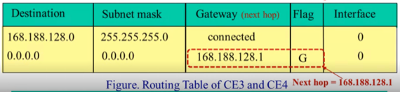
- 그리고 다른 서브넷에 있는 CE3와 CE4의 라우팅 테이블은 위처럼 구성이 되어 있다고 해보자
Routing 과정
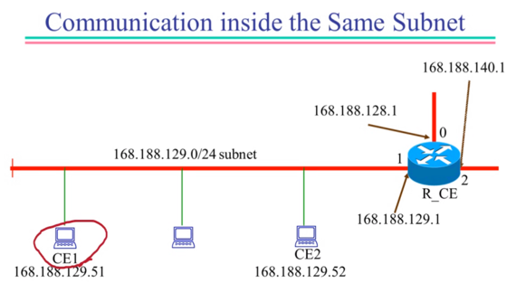
- 일단 첫번째로 CE1이 CE2에게 보내려고 한다면 먼저 자신의 라우팅 테이블을 확인한다
- 이후 수신지의 IP와 서브넷 마스크를 &해 Destination을 알아오고, 매치된 Gateway를 확인하게 된다
- CE1에서 CE2로 보낼때 자신의 라우팅 테이블로 확인을 해보니까 Gateway가 connected로 나오므로 라우터를 거치지 않고 바로 보낼 수 있다는 것을 확인할 수 있다
- 즉, Gateway가 connected인 경우에는 바로 보낼 수 있으니까 IP주소를 수신지의 IP주소로 하여 ARP를 보내고, 물리주소를 알아내어 바로 패킷을 쏘게 되는 것
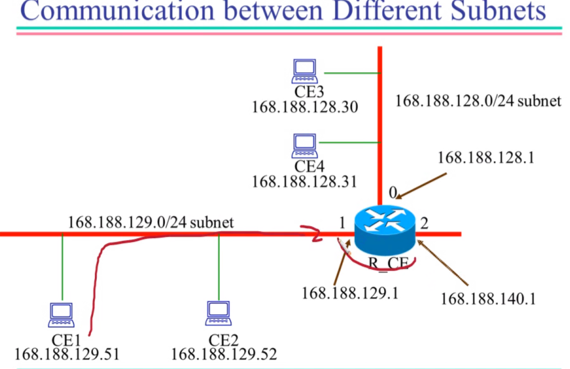
- 하지만 다른 서브넷에 있는 CE3과 CE4에게 보내는 과정은 한번에 갈 수 없으므로 몇가지의 절차를 밟게 된다
- 일단 CE1에서 CE3으로 보내고 싶다고 해보자
- 그럼 먼저 자신의 라우팅 테이블을 확인해 next hop의 IP를 알아온다
- 다른 서브넷에 있기 때문에 당연히 라우팅 테이블에서 확인하면 Gateway가 connected가 아니라 flag G의 라우터 IP가 나오게 된다
- 즉, 위의 예제에서는 168.188.129.1이 나오게 되는 것
- 그러면 일단 라우터에게 보내야 된다는 것을 확인하게 되었으므로 라우터 IP에게 ARP를 날려 라우터의 물리주소를 알아온 후 전송을 하게 된다
- 위의 예제에서는 168.188.129.1로 ARP를 날려 여기에 해당하는 물리주소를 알아온 후 보내게 되는 것
- 여기서 주의할점은 나의 최종 목적지는 라우터가 아닌 다른 서브넷에 있는 호스트이므로 라우터의 IP를 패킷에 적는게 아니고 다른 호스트의 IP를 패킷에 적되, 라우터의 물리주소를 프레임에 적어야 된다는 점이다
- 위의 예제에서 편의상 물리주소랑 노드 이름이랑 일치시킨다면
- 송신지 물리주소 : CE1
- 수신지 물리주소 : R_CE
- 송신지 IP : 168.188.129.51
- 수신지 IP : 168.188.128.30 - 168.188.129.1이 아니라는 것!
- 그럼 이제 라우터가 패킷을 받고 자신의 라우팅 테이블을 이용해 next hop의 IP주소를 확인하고, 그쪽으로 ARP를 날려 물리주소를 확인하고 패킷을 전달하는 과정을 반복한다
- 위의 예제에서는 패킷이 라우터에 도착했으니까 자신의 라우팅 테이블을 돌렸더니 168.188.128.30은 connected에 interface 0 이라고 뜨게 된다
- 따라서 0번 포트에 연결되어있다는 것을 확인하고 0번 포트로 168.188.128.30에 대한 ARP를 날리고 물리주소를 받으면 패킷을 쏘게 되는 것
- 저번 시험에서도 실수했듯이 반드시 기억할것은 패킷의 IP주소는 처음부터 끝까지 항상 동일하고 프레임의 물리주소는 hop2hop으로 건너갈때마다 계속 바뀐다는 것 항상 조심혀라
Subnet mask가 잘못 설정되어 있을때
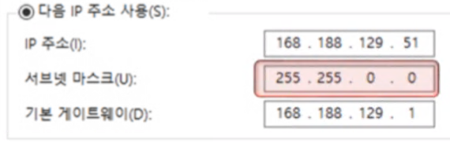
- 윈도우에서 IP주소를 입력하면 서브넷 마스트가 자동으로 채워진다
- 자동으로 채워지는 서브넷 마스크는 IP주소의 Class에 기반해서 채워지는 것으로, 이것으로 서브넷 마스크를 설정하게 되면 오작동할 수 있으므로 제대로 설정해 주는 것이 필요하다
- 이게 왜그런지를 위의 예제를 가지고 설명하면
- 255.255.0.0으로 서브넷 마스크가 설정이 되어 있으면 자신의 라우팅 테이블의 Destination 에는 168.188.0.0으로 들어가게 될 것이다
- 그럼 실제로도 나랑 연결되어 있는 168.188.129.52같은 경우에는 잘 패킷이 전달된다 - AND연산 결과 168.188.0.0이므로 connected로 뜰 것이고, 따라서 같은 망 내에서 전송하려고 할 것이기 때문
- 하지만 나랑 다른 서브넷에 있는 168.188.128.30의 경우에는 라우터로 간 다음에 다른 서브넷으로 가야되는데 그렇지 않고 이 경우에도 AND의 결과가 168.188.0.0으로 connected로 나오기 때문에 같은 망에서 전송을 하려 할 것이다
- 하지만 ARP를 요청해도 해당 호스트가 여기 없기 때문에 답장이 안오고, 통신에 실패하게 된다
- 즉, 다른 서브넷에 있는데 같은 서브넷에 있는것으로 판단해 잘못 ARP를 날려 물리주소를 받아오지 못하는 상황이 발생하기 때문
- 하지만 완전 다른 netid를 가진 놈한테 보내는 경우에는 AND를 해도 라우터로 가라고 나와 라우터까지 정상적으로 가기 때문에 통신이 가능한 이상한 상황이 벌어지게 된다
PC Router - Proxy ARP
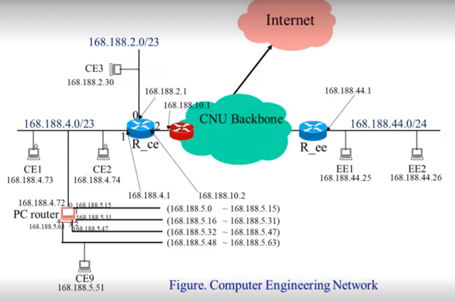
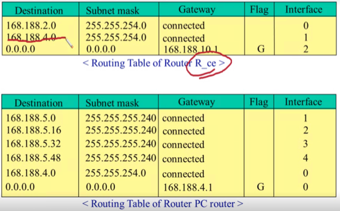
- Proxy ARP는 실습시간에 죽어라 하고 있으니 간단맨하게 짚고 넘어가자고
- 일단 위의 예시에서 기본 세팅은 다음과 같음
- R_CE의 경우에 0번 포트는 168.188.2.0/ 23이고 1번 포트는 168.188.4.0/ 23 이기 때문에 168.188.2.xxx와 168.188.3.xxx은 0번 포트에 묶이고 168.188.4.xxx와 168.188.5.xxx은 1번 포트에 묶이게 된다
- 그리고 168.188.4.72에 붙어있는 우리의 PC Router는 168.188.5.0부터 168.188.5.63까지 64개의 호스트를 관할에 두고 있다
- 또한 우리의 PC Router는 자신이 관할하는 호스트를 /28의 서브넷 마스크를 가지는 4개의 서브넷으로 나누어 묶어놓았다
- 즉, 32 - 28 = 4이므로 서브넷 하나당 16개의 호스트가 묶여있는 셈
- 위 그림에서 PC라우터의 라우팅 테이블을 보면 각각 서브넷의 Destination과 Subnet mask가 적절히 설정되어 있는 것을 볼 수 있음
- 이제 우리의 PC Router에 묶여있는 놈이 패킷을 보내는 과정을 보자
- 이 과정은 지금까지 배운거랑 동일하다
- 먼저 자신의 라우팅 테이블을 확인해 ARP를 날려야 할 IP를 알아내고
- 같은 서브넷이면 걍 ARP를 보낼 것이고, 다른 서브넷이면 라우터에게 ARP를 보내 물리주소를 받고 패킷을 보낼거임
- 라우터로 온 패킷은 자신의 라우팅 테이블을 돌려 어케할지 결정하고 ARP날리고 보내고 ㅇㅈㄹ할거임
- 근데 패킷을 받아오는 과정은 좀 다르다
- 왜냐하면 PC Router에 묶여있는 놈은 R_CE와 직접적으로 연결되어있는 게 아니기 때문에 R_CE에서 ARP를 보내봤자 받지 못하기 때문
- 따라서 PC Router에서 자신 관할의 호스트에게 ARP가 오면 자기가 대신 받아주기 위해 자신의 물리주소를 답장으로 보낸다
- 그러면 R_CE가 PC Router에게 패킷을 보내게 되고 그 다음부턴 PC Router의 라우팅 테이블을 돌려 알아서 보내게 될거임
좀 더 넓은 관점에서의 예시
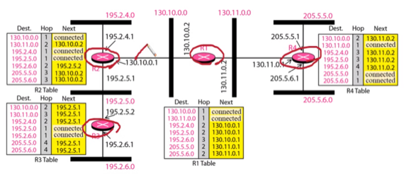
- 뭐 이것도 저번 학기에 한 예시이긴 한데
- 위 예시를 읽는 방법은 간단하다
- 일단 검은색 굵은 선은 호스트들이라고 생각하면 됨 - 즉, 130.10.0.0이라고 이름붙여져있는 검은 선은 130.10.0.xxx의 IP를 가진 호스트들이 모여있다고 생각하셈
- 다만 주의할 점은 여기서는 Subnet mask가 명시되어있지 않는데 걍 /24라고 생각하셈
- 그리고 라우터의 각각 포트에 IP주소가 할당되어 있는 것을 볼 수 있고
- 라우팅 테이블을 읽는 방법은 다음과 같다
- 일단 첫번째 행인 Dest는 너가 아는 그 Dest가 맞다
- 세번째 행은 지금까지 보던 Next와 동일하다 - 다음에 패킷을 보내야 되는 IP를 나타낸 것
- 그리고 두번째 행인 Hop은 몇번만에 해당 지점으로 갈 수 있냐를 나타내는 숫자임 - 보면 Next가 Connected인 경우에는 바로 갈 수 있으므로 Hop이 1이 되어 있고, 라우터를 한번 거텨서 가야되는 경우에는 2, 두번 거쳐야 되면 3 이런식이다
- 이걸 토대로 그림 보면 구구절절 맞는얘기임